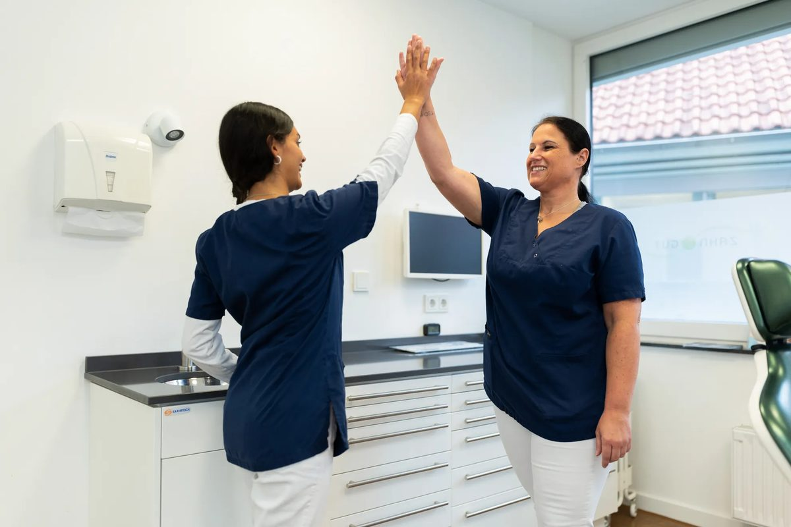
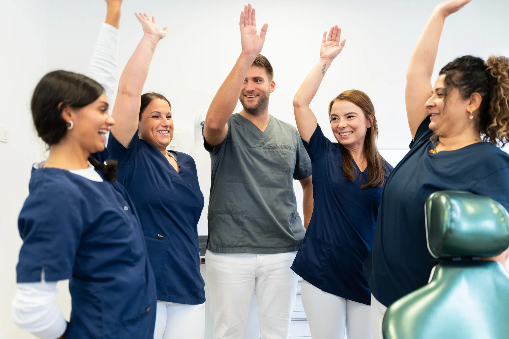
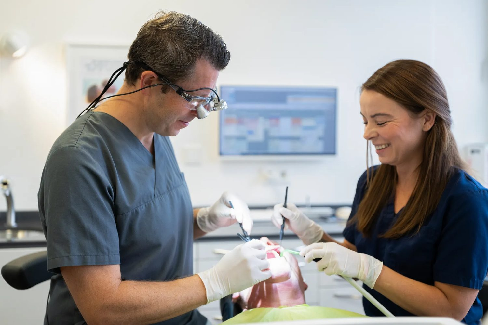
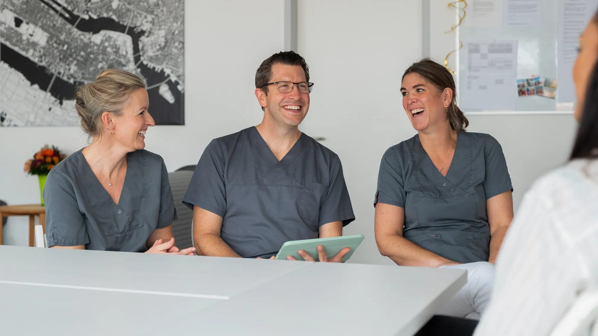
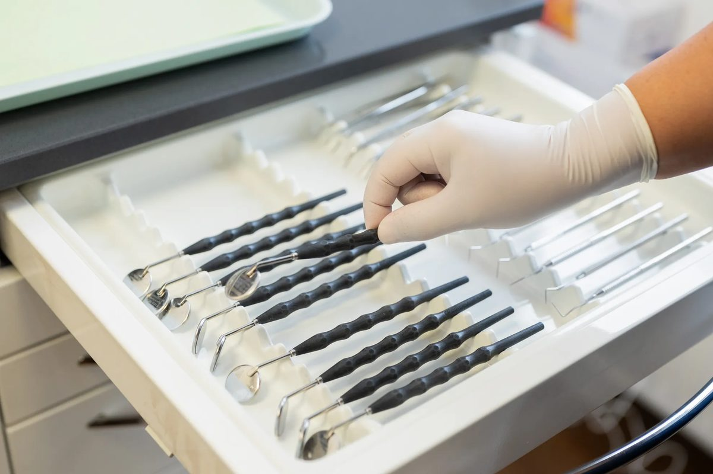
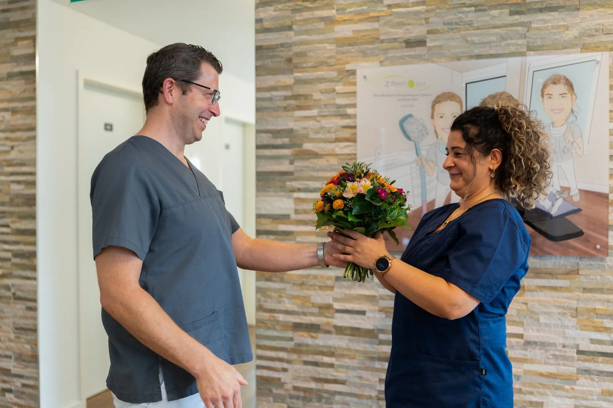

Teamgeist
Ein herzliches, engagiertes Team, das kollegial zusammenarbeitet und sich gegenseitig unterstützt.

Karriere bei ZAHN & GUT
Zahnmedizin mit Herz. Werde Teil unseres Teams!
Über uns
Wir sind ZAHN & GUT, eine moderne Gemeinschaftspraxis in Meerbusch. Bei uns stehen Teamgeist, Qualität und Menschlichkeit im Mittelpunkt.
Wir bieten ein breites Behandlungsspektrum, von Zahnmedizin für Kinder bis Sofort-Implantologie, und schaffen eine Arbeitsatmosphäre, in der sich sowohl unsere Patienten als auch unser Team wohlfühlen.
Du findest uns in der 2. Etage des Geschäftshauses am Deutschen Eck in Meerbusch-Büderich. Die Praxis ist barrierefrei, voll klimatisiert und bequem per Aufzug zu erreichen.
Die Praxis kennenlernen
Unser Team
Wir sind ein herzliches, engagiertes Team aus Zahnärzt:innen und Fachkräften. Gemeinsam decken wir ein breites Spektrum von Kinderzahnmedizin bis Implantologie ab.
Dabei arbeiten wir kollegial, modern und patientenorientiert, immer mit dem Ziel, einander zu unterstützen und beste Ergebnisse für unsere Patienten zu erreichen.
Unser PraxisteamBenefits
Faire und attraktive Vergütung. Heute und in der Zukunft.
Wir bieten Dir eine betriebliche Altersvorsorge mit einem Arbeitgeberzuschuss.
Du möchtest Dich weiterbilden? Dann stehen wir Dir zur Seite.
Bei uns kannst Du Dich auf Fahrtkostenzuschüsse freuen.
Regelmäßige Teamevents und gemeinsame Aktivitäten runden unser Portfolio ab.
Ein Jobticket oder Fahrtkostenzuschuss steht Dir auf Wunsch zur Verfügung.
In Absprache mit uns ist eine 4-Tage-Woche möglich.
Wir haben zu jeder Jahreszeit das passende Klima.
Bei uns profitierst Du von einer guten Verkehrslage.
Weitere Benefits kannst Du den jeweiligen Stellen entnehmen.
Wir suchen Dich
Für unsere Praxis in Meerbusch suchen wir Verstärkung in Assistenz, Prophylaxe und Verwaltung sowie Auszubildende.
Nichts Passendes dabei? Du kannst Dich jederzeit initiativ bewerben, telefonisch unter 02132 99 88 426 oder per E-Mail an dr.k.becker@zahnundgut.de.

Zahnmedizin mit Herz. Wenn Du in einem engagierten Team mitwirken willst, das Spaß an guter Medizin hat: Willkommen bei ZAHN & GUT!
Drei gute Gründe

Ein herzliches, engagiertes Team, das kollegial zusammenarbeitet und sich gegenseitig unterstützt.

Ein breites Behandlungsspektrum von Kinderzahnmedizin bis Sofort-Implantologie, modern und patientenorientiert.

Eine Arbeitsatmosphäre, in der sich unsere Patienten und unser Team gleichermaßen wohlfühlen.
Bewerbung
Wie bist Du auf uns aufmerksam geworden? Was macht Dich aus und warum bist Du die geeignete Besetzung für die Stelle?
Ob ein tabellarischer Lebenslauf oder in Textform bleibt Dir überlassen. Wichtig ist uns, was die Aufgabenbereiche Deiner letzten Position waren.
Es reicht vollkommen aus, wenn Du uns Deine letzten relevanten Zeugnisse zusendest. Wahlweise kannst Du auch noch Zertifikate mit anhängen.
So geht es weiter
F.A.Q.
Allgemeine Fragen
Du kannst Dich auch jederzeit initiativ bei uns bewerben. Wir lassen uns gerne von Deinen Fähigkeiten überzeugen.
Unsere Webseite ist immer auf dem neusten Stand, daher sind alle ausgeschriebenen Stellen aktuell.
Die Daten werden bei uns nur hausintern verarbeitet und nicht an Dritte weitergegeben. Gerne können wir diese auf Wunsch löschen oder für spätere Verfahren berücksichtigen.
In der jeweiligen Stellenanzeige findest Du ein Bewerbungsformular. Alternativ auch via E-Mail oder über den Postweg.
Grundsätzlich legen wir keinen großen Wert auf Noten, viel wichtiger ist uns die Person hinter der Bewerbung.
Fragen zur Ausbildung
Der Startzeitpunkt der Ausbildung ist in der Stellenausschreibung festgehalten. Sollte er sich ändern, passen wir ihn entsprechend an.
Wir schätzen engagierte und motivierte Teamkollegen sehr, daher ist eine Übernahme möglich.
Unterlagen parat? Falls nicht, kannst Du auch ohne Unterlagen Kontakt aufnehmen.